Past Biennale
2017 제9회 비엔날레
2017 국제공모전
세계 도예 작가들의 축제이자 화려한 등용문으로 우뚝 선 \2017국제공모전\에는 역대 최고수준인 전 세계 76개국 2,470점이 출품되었습니다. 이번 전시에서는 10점의 국제공모전 주요 수상작품을 포함하여 예선을 통과한 89점의 세계적인 수준의 현대 도자 작품을 전시함으로써 전 세계 현대 도자예술의 현주소를 진단하고 도자예술의 발전적 미래를 모색하는 자리를 마련했습니다.
- 기간 : 2017.4.22.(토) ~ 10.9.(월)
- 장소 : 이천세계도자센터 3층 제3, 4전시실
- 주제 : 토비욘 크바스보, 조원재, 소링유엔, 폴리엔 바바스, 나오키 가토, 알리다 반 알메로, 문병식, 마리아 테레사 쿠진스카, 아쯔시 시마다, 안네 튀른
-
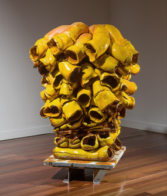
[대상] 토비욘 크바스보, 노르웨이
<튜브 조형물> -
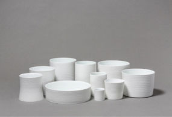
[금상] 조원재, 한국
<백색음유> -
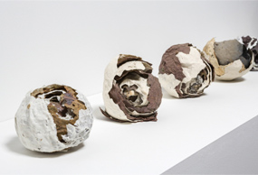
[은상] 소링유엔, 홍콩
<발굴> -
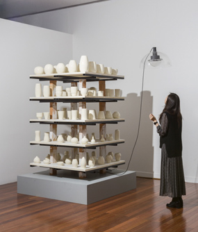
[은상] 폴리엔 바바스, 네덜란드
<나에게 말해 줄래요> -
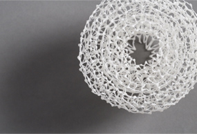
[동상] 나오키 가토, 일본
<자연> -
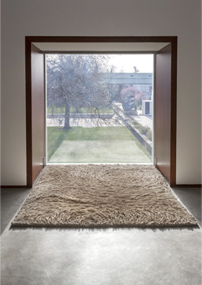
[동상] 알리다 반 알메로, 미국
<코리올리> -
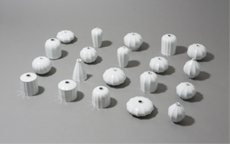
[동상] 문병식, 한국
<선인장> -

[특별상] 마리아 테레사 쿠진스카, 폴란드
<에트루리아 토르소> -

[특별상] 아쯔시 시마다, 일본
<강아지 꽃병> -

[특별상] 안네 튀른, 에스토니아
<바다>
이천주제전
이천주제전 <기록: 삶을 말하다>는 혁신적인 의식과 태도로 서사적 도자의 문을 연 20세기 해외작가 6인과 2000년대에 활발히 활동하고 있는 국내외 작가 20명의 작품 총 90여 점으로 구성하였습니다. 다채로운 서사적 표현으로 동시대 인간의 삶을 담고 있는 전시작품을 통하여 인생의 여러 이야기들을 새롭게 만나고 실존적, 사회적 존재로서 현대인의 삶에 대해 생각해 보는 기회를 제공하였습니다.
- 주제 : 기록: 삶을 말하다
- 기간 : 2017. 4. 22.(토) ~ 5. 28.(일)
- 장소 : 이천세계도자센터 2층 제1, 2전시실
- 참여작가 : 아라키 타카코, 로버트 아네슨, 마크 번스, 바이올라 프라이, 미시마 키미요, 12대 미와 큐세츠, 스테판 버드, 셰리 보일, 장 칭위엔, 비타 파야지, 미셸 구에리, 김문경, 리우 쩡, 맹욱재, 요아킴 오야넨, 이인숙, 디에고 로메로, 스테파니 루스, 석창원, 샤오 팅루, 신이철, 제이슨 워커, 웨이 화, 안느 벤첼, 야마다 히로유키, 윤정선
여주주제전
여주주제전 <기념: 삶을 기리다>에는 미래 도자문화의 가능성을 제시하는 현대 도자 작가들의 골호 작품 220여점을 전시했으며, 생사의 개념을 담고 있는 골호 작품을 통해 일생을 기념하고 상징하는 서사적 조형양식을 발굴하는 기회를 만들었습니다. 220여명의 참여 작가들이 본인, 혹은 사랑하는 사람, 또는 기념하고 싶은 대상을 위해 만든 작품을 통해 관람객들은 삶과 죽음에 대한 긍정적 인식을 경험하였습니다.
- 주제 : 기념: 삶을 기리다
- 기간 : 2017. 4. 22.(토) ~ 5. 28.(일)
- 장소 : 여주세계생활도자관 2층 전실
- 참여작가 : 하성미, 김지혜, 이재준, 윤호준, 박성욱, 김상기, 송준규, 이명아, 이은, 주세정, 조신현, 이택수, 임지현, 유의정, 김은주, 유정민, 이기연, 김명선, 김선애, 이윤희, 서대균, 김애영, 김준명, 배세진, 천혜영, 이지숙, 이춘복, 이지혜, 고희숙, 박은정, 황승욱, 정지혜, 이화윤, 이경주, 오은교, 김현숙, 정호정, 최영희, 양상근, 윤솔, 한주원, 이화준, 이지은, 이난희, 이동하, 이꽃담, 엄성도, 민세원, 노혜신, 김준휘, 김영수, 권진희, 김명례, 김쥬쥬(김민주), 김일완, 김재규, 김정범, 박노경, 백승주, 유경옥, 윤경혜, 윤영문, 이낙영, 조광훈, 최보람, 최현주, 황재원, 함연주, 이가진, 구세나, 양정숙, 황지혜, 최호준, 나정희, 김승욱, 박경순, 모인순, 이용필, 김병율, 조일묵, 이영학, 김종인, 강흥석, 조병학, 천종업, 이인진, 임헌자, 김혜정, 한정용, 김판기, 허상욱, 김상만, 이창화, 김진규, 강소연, 박지은, 김병제, 박성극, 윤나리, 한정은, 김지원, 신원동, 이지원, 허영무, 민경호, 오종보, 최서연, 정지현, 조미현, 현상철, 김순식, 김생화, 천웨이, 와타라이 야스히로, 타카마 토모코, 이시야마 테츠, 아오키 켄, 아오키 스미코, 안도 유키, 타나카 테츠야, 무라야마 마리아, 콘노 토모코, 이카케 사유리, 우에다 마유, 얏와이라우, 가네코 츠카사, 사카쿠라 젠에몬, 하마나카 시로, 타하라 타카오, 토메하라 마사미, 토다 모리노부, 시바타 마리코, 나가에 시게카즈, 타케우치 신고, 마츠키치, 요시카와 마사미치, 카와바타 켄타로, 콘도 요코, 카토 토모나리, 이쿠라 타카시, 야마기시 다이스케, 미야베 토모히로, 타나카 요시카즈, 아이바 루이지, 오지오 카오루, 타카야마 다이, 타나카 아야, 나카무라 다카시, 타카하시 세이카, 오쿠보 요헤이, 이무라 토시미, 아소 란도, 장쉬에즈, 쪼우쏭, 천밍자오, 쉬양, 호우첸루, 천쉬난, 쉬홍보, 두친펀, 리우시, 우하오, 쉬췬, 쑨쉬에준/지앙마샹, 리하이린, 쪼우레이, 리 양, 펑치엔, 허보원, 렁윈링, 첸광회이, 루빈, 후민, 황용싱, 쓰원거, 호우홍메이, 천차오, 예이리, 리윈샨, 장허민, 루옌위, 리따이롱, 공원이, 린룽지에, 천샤오이, 리궈웨이, 텐신이, 쉬지치, 우멍시, 팡포칭, 왕싱위, 황웨이치엔, 왕이훼이, 량지아하오, 왕 크리스틴 이팅, 양찌아찌아, 탕지팅, 쉬쫑은, 니나 프랑코바, 메르헨 올리비에 볼링크, 요리스 링크, 로버트 크리스티안 파월스, 이시자와 에이코, 샌더 알블라스, 프로케 반 바른, 크리스티나 비그나텔리 브루니, 제시카 해리슨, 저스틴 데이빗 크로우, 앤디 스토체네거, 카우젠 반 리우웬, 정재진
광주주제전
광주주제전 <기억: 삶을 돌아보다>는 인간 삶의 이야기를 되돌아보고자 기획된 전시로서 국내외 주요 박물관에 소장되어 있는 한국의 토우와 백자명기, 중국의 도용과 가형명기, 일본의 민속 흙인형과 하니와 등 인간의 삶을 서사하는 유물 100여 점과 유물들의 이야기를 재해석한 현대 도자작품 30여 점으로 구성되어 과거 인간의 삶과 연관된 다채로운 이야기를 만나볼 수 있었습니다.
- 주제 : 기억: 삶을 돌아보다
- 기간 : 2017. 4. 22.(토) ~ 5. 28.(일)
- 장소 : 경기도자박물관 2층
- 참여작가 : 장링윈, 황셩, 아이코 쯔모리. 오이시 사야카. 마츠모토 케이코, 라이언 미첼, 박정근, 윤영수, 최지만, 이정석, 윤지용
제5회
아름다운우리도자공모전
우리 전통을 올바르게 계승하고, 높은 공예적 완성도와 독창적인 재료를 개발하는 등 우리도자를 계승·발전시키고자 추진하는 공모전입니다. 총 상금 3,400만원 규모로 진행되는 공모전을 통해 선정된 우수작 45점이 전시되었으며, 현대와 전통을 아우르는 국내 신진작가를 발굴·육성한다는 의미에서 뜻 깊은 행사로 자리매김하고 있습니다.
- 기간 : 2017. 4. 22.(토) ~ 10. 9.(월)
- 장소 : 경기도자박물관 1층 기획전시실
- 참여작가 : 우시형, 김유성, 이준호, 이정현, 정영락, 강홍철, 이은범, 이진수, 김태희, 이미진, 김판기, 김성태, 윤석신, 김영실, 이유경, 최대규, 박성극, 이준범, 김종영, 한기석, 이진호, 김혜련, 오유리, 장완, 전상우, 조원재, 신원동, 박서희, 김은주, 조성현, 최종음, 정세욱, 이상욱, 우은주, 이지현, 김희준, 우경자, 이상현, 이정현, 박종진, 이혜원, 김상철, 강소청, 김명훈, 홍승일
-
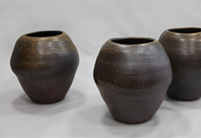
[대상] 우시형, 충북 음성
<산수> -
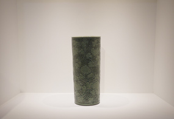
[최우수] 김유성, 전남 강진
<청자연리보상당 초문통형병> -
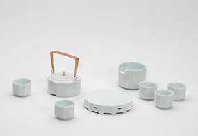
[우수] 이준호, 서울 관악
<10각 다기 세트> -
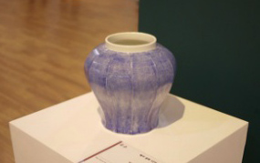
[우수] 이정현, 충남 부여
<백자 청화 12각 면취호> -
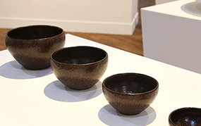
[우수] 정영락, 경기 여주
<초문상감옹기>